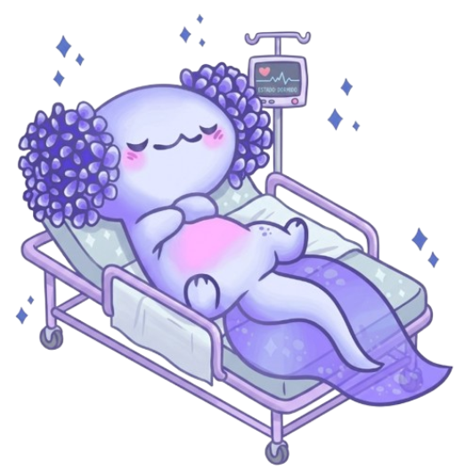

El Cuidado de Personas Dependientes requiere conocimientos técnicos y empatía humana. Los pilares fundamentales para garantizar la calidad de vida del paciente son:
Ejemplo práctico: Técnica para girar a un paciente encamado (Decúbito Supino a Decúbito Lateral).
[PROTOCOLO ESTÁNDAR - TAREA TUVCH]
1. Informar al paciente: "Le voy a dar la vuelta para que esté más cómodo".
2. Preparación: Frena la cama y ajusta la altura.
3. Posicionamiento:
- Colocar el brazo del paciente sobre su tórax.
- Flexionar la pierna contraria al lado hacia el que se va a girar.
4. Movimiento:
- Colocar una mano en el hombro y otra en la cadera del paciente.
- Tirar suavemente hacia el cuidador usando el propio peso del cuerpo.
5. Confort: Colocar almohadas detrás de la espalda y entre las rodillas para evitar roces (prevención de escaras).Nota: En tu aplicación, los cuidadores pueden programar alarmas para que la app les notifique cada vez que toque realizar este cambio postural.
Responde estas preguntas basándote en la lectura "Fundamentos".
Asocia el término clínico de la izquierda con su definición a la derecha.
Demuestra tus conocimientos integrales en el cuidado del paciente.
Felicidades por completar este tema, ahora tiene una buena idea de lo que es el CPD.